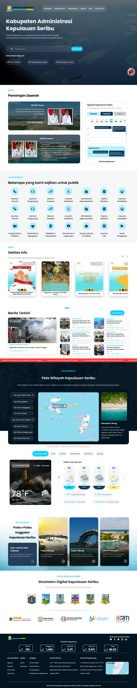
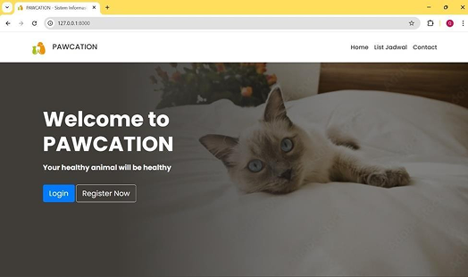

Universitas Bina Sarana Informatika
S1 Sistem Informasi
Program SarjanaDesainer UI/UX | Analis Bisnis & Mitra Bisnis | Spesialis Pemasaran & Media Sosial · Mahasiswa Sistem Informasi
Jelajahi Portofolio ↓HALO, SAYA
Desainer UI/UX · Analis Bisnis & Mitra Bisnis · Spesialis Pemasaran & Media Sosial
Mahasiswa Sistem Informasi yang merancang pengalaman digital dan situs web yang fungsional, jelas, serta nyaman digunakan.
S1 Sistem Informasi
Program SarjanaProyek Pengembangan Situs Web Kabupaten Administrasi Kepulauan Seribu
ProyekProyek Pengembangan Situs Web Kabupaten Administrasi Kepulauan Seribu
ProyekLaras ID · Aplikasi Android Toko Laras ID
Pemasaran & Desain Produk
Halaman beranda, statistik daerah, dan pusat informasi publik.
Lihat desain ukuran penuh Buka desain lengkap
Buka desain lengkap
Detail desain aplikasi toko Laras.id: masuk, beranda, katalog, detail produk, dan alur penawaran.
Lihat desain lengkap
Situs layanan hewan peliharaan hasil proyek bootcamp, dengan halaman jadwal dan kontak.
Lihat situs